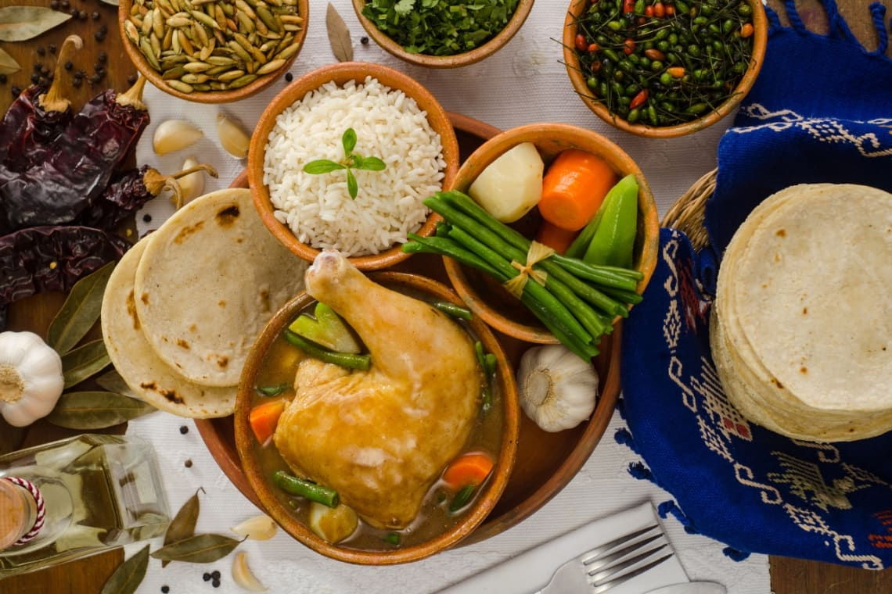

Pepian

Pepián is a traditional Guatemalan stew. In addition, according to the
Guatemalan Institute of Tourism -Inguat- it is an errand of Kaqchikel
origin that is served at weddings, birthday celebrations and more
celebrations.
Ingredients
- 2 lb. of beef
- 1 dried Guajillo chili
- 2 ounces of sesame seeds
- 1 dried pasilla chile
- 1 cinnamon stick
- 4 tomatoes
- 1 cup of tomatillo
- 1 onion
- 2 ounces of Pumpkin seed
- 1 banana peel
- 3 garlic cloves
- 4 fat peppers
- 2 cloves
- 8 pieces of cold French bread or rice flour
- 1 bunch of coriander
- 1 liter of water
- ½ Chayote
- ½ Lb. green beans
- ½ Lb. of medium potatoes
- Carrots
- Onion stalks
- Salt and pepper to taste
Steps
-
First, for the Pepián Negro, place the meat in a pot to cook in a liter
of water.
- Before it is ready, add the vegetables to cook.
-
Then, separately in a comal, brown the chiles, the tomatillo, the
tomato, the onion, the sesame seeds, the pumpkin seed, the garlic
cloves, the cinnamon stick and the banana peel.
-
After all the ingredients have browned perfectly, blend with a little of
the broth where the meat has been cooked.
-
Then, this liquefied mixture is boiled and thickened together with the
bunch of coriander for 30 minutes.
-
Then, drop the meat and the vegetables, so that the flavors mix together
and let it boil until it thickens.
-
For the Pepián Rojo, omit the pasilla chile and the banana peel, and add
more tomato, achiote and chili bell pepper.
-
inally, it can be served with white rice and a couple of delicious
tortillas.